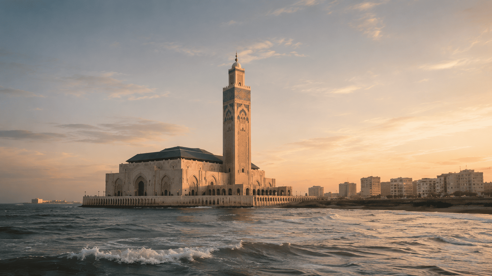
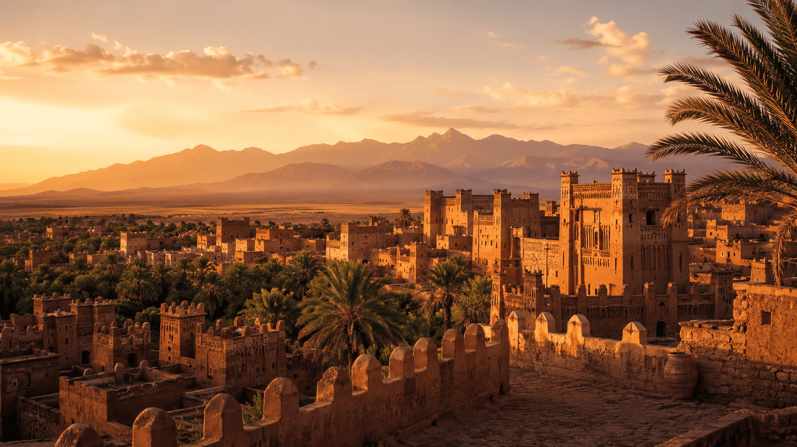

From imperial cities to desert landscapes, discover the places, flavors and traditions that make Morocco unforgettable.

The Red City, former capital of Morocco. Its UNESCO-listed medina, Djemaa El-Fna square, maze-like souks, luxurious riads and historic palaces make it one of Morocco’s top travel destinations. Must-sees include Majorelle Garden, Bahia Palace and the artisan souks.

Morocco’s spiritual and cultural capital. Fès El-Bali is the world’s largest medieval car-free medina. The Chouara tanneries, Al-Qarawiyyin Mosque and University, madrasas and fondouks make it one of the most unique cities on earth.

The legendary Blue City, nestled in the Rif Mountains. Its alleys are painted in shades of blue and white. A peaceful escape ideal for hiking, photography and discovering local crafts, with a unique atmosphere far from the crowds of big cities.

The golden dunes of Erg Chebbi rise up to 150 meters high — among the tallest in the Sahara. Spend a night in a Berber desert camp under the stars, ride a camel at sunset and watch the sunrise over the golden dunes. A timeless and unforgettable experience.

The City of Trade Winds — a historic fishing port with 16th-century Portuguese ramparts. Known worldwide for windsurfing and kitesurfing thanks to its steady winds, Essaouira offers a UNESCO-listed medina, art galleries, a hippie-chic atmosphere and the famous Gnaoua Festival every June.

Known as the “Hollywood of Africa”, Ouarzazate is home to some of the largest film studios in Africa — Gladiator, Lawrence of Arabia and Game of Thrones were filmed here. It is also the perfect gateway to Aït Ben Haddou, the Drâa Valley and southern Morocco’s kasbahs.

READY TO FIND THE PERFECT TIME?